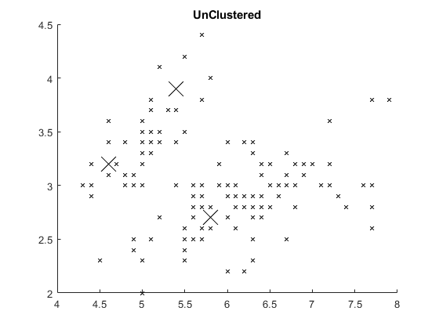
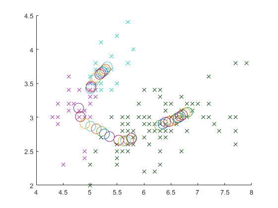
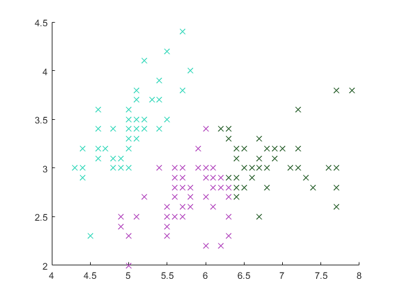

function main
clear;
close all;
global Color;
K_Value = 3;
Color = CC(K_Value);
Iris = getDocument('iris.csv');
Points = getPoints(K_Value);
points = getPointArray(Iris,Points);
drawAllPoints(Iris,K_Value,Points);
Iris=ClusterDistance(Points,Iris);
plotClustered(Iris,K_Value);
Centroids = CalculateCentroids(Iris,K_Value);
cent = 0;
c=0;
for i=1:500
c = c+1;
Iris = ClusterDistance2(Centroids,Iris);
Centroids = CalculateCentroids(Iris,K_Value);
if(isequal(Centroids,cent))
break;
else
cent = Centroids;
end
end
plotClustered(Iris,K_Value);
end
function drawAllPoints(array,K,Points)
count = length(array.sepLength);
figure(1); hold on;
for i=1 : count
if(any(Points(:)==i))
plot(array.sepLength(i),array.sepWidth(i),'x','Markersize',20,'Color',[0,0,0]);
else
plot(array.sepLength(i),array.sepWidth(i),'x','Markersize',5,'Color',[0,0,0]);
end
end
title('UnClustered');
end
function [array] = ClusterDistance(Points,array)
ArraySize = length(Points);
PointSize = length(array.sepWidth);
for i=1: PointSize
a= zeros(1,ArraySize);
for j =1 : ArraySize
if(i == Points(j))
else
P1 = [array.sepLength(Points(j)); array.sepWidth(Points(j))];
P2 = [array.sepLength(i); array.sepWidth(i)];
a(j) = distance(P1,P2);
end
end
array.class(i) = getIndex(a);
end
end
function plotClustered(array,K_Value)
global Color;
count = length(array.sepWidth);
figure(); hold on;
for i =1: count
plot(array.sepLength(i),array.sepWidth(i),'x','Markersize',8, 'color',Color(:,:,array.class(i)));
end
end
function Centroids = CalculateCentroids(array,K)
Centroids = zeros(K,3);
count = length(array.sepWidth);
for i=1: count
Centroids(array.class(i),1) =1+ Centroids(array.class(i),1);
Centroids(array.class(i),2) =Centroids(array.class(i),2)+ array.sepLength(i);
Centroids(array.class(i),3) =Centroids(array.class(i),3)+ array.sepWidth(i);
end
Centroids(:,2) = Centroids(:,2) ./ Centroids(:,1);
Centroids(:,3) = Centroids(:,3) ./ Centroids(:,1);
for i=1: K
plot(Centroids(i,2),Centroids(i,3),'o','Markersize',15);
end
Centroids(:,1) = Centroids(:,2);
Centroids(:,2) = Centroids(:,3);
Centroids(:,3) = [];
end
function [array] = ClusterDistance2(Points,array)
ArraySize = length(Points);
PointSize = length(array.sepWidth);
for i=1: PointSize
a= zeros(1,ArraySize);
for j =1 : ArraySize
if(i == Points(j))
else
P1 = [Points(j,:)];
P2 = [array.sepLength(i); array.sepWidth(i)];
a(j) = distance(P1,P2);
end
end
array.class(i) = getIndex(a);
end
end
  